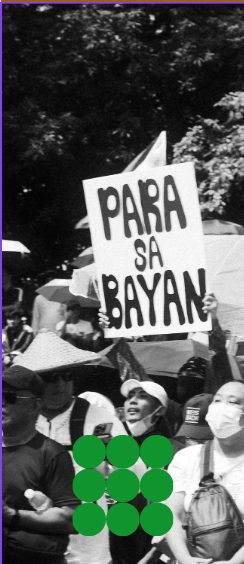
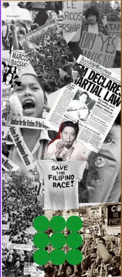

Group 8 Course Presentation
Understanding the Self:
The Political Self
A philosophical, constitutional, and psychological journey into the Filipino citizen and collective nationhood.
Use Arrow Keys [← / →] to navigate slides
01. Objectives
Course Goals
1. Define the Political Self and its role in shaping personal identity.
2. Identify the factors influencing political beliefs, values, and perspectives.
3. Recognize civic responsibilities and the importance of democratic participation.
02. The Political Self
“Man is by nature a political animal.” — Aristotle
• People are naturally obligated to participate in a political system as social citizens.
• Politics is fundamentally how people living in groups negotiate and make collective decisions.

03. Who is a Filipino?
According to Article IV, 1987 Philippine Constitution
1. Those whose father or mother are citizens of the Philippines (Jus Sanguinis).
2. Those born before Jan. 17, 1973 of Filipino mothers electing citizenship upon majority.
3. Those who are naturalized in accordance with law.
04. What is Political?
• Politics is the way people living in groups make collective decisions.
• Primarily concerned with the formulation and justification of governmental policy.
• A republic is a political system wherein sovereign power remains subject to those governed.
05. What is Political Self?
• Internal beliefs regarding what a "good society" means and appropriate state regulation.
• Political self-organization: spontaneous emergence of public opinion, civic coalitions, and historical revolutions.

06. Filipino Traits and Values
The Kapwa Core: A shared inner self bridging individuality with the collective.
Hospitality · Close Family Ties · Bayanihan · Cheerful & Optimistic · Respect (Paggalang) · Mañana Habit · Crab Mentality · Colonial Mentality · Pride · Filipino Time · Ningas Kugon
07. Accommodative Surface Values
Hiya: “Sense of propriety” and acute social dignity.
Utang na Loob: Norm of sacred reciprocity and enduring gratitude.
Pakikisama: Conformity with group harmony and companionship.
08. Confrontative Surface Values
Bahala Na: Determination to do one's utmost in the face of uncertainty.
Lakas ng Loob: Inner courage and moral fortitude.
Pakikibaka: Revolutionary capacity to resist common oppression.
Kapwa: The unifying recognition of shared identity.
09. 8 Levels of Kapwa
Ibang Tao (Outsider): Pakikitungo (Civility) → Pakikisalamuha (Mixing) → Pakikilahok (Joining) → Pakikibagay (Conformity) → Pakikisama (Camaraderie).
Hindi Ibang Tao (One of Us): Pakikipagpalagayang-loob (Mutual Trust) → Pakikisangkot (Involvement) → Pakikipagkaisa (Total Oneness).
10. Filipino Cultural Markers
Proverbs (Salawikain): Traditional sayings encoding ancestral wisdom.
Superstitions: Spiritual synchronicity and folk beliefs.
Myths and Legends: Folk histories morphing into larger-than-life lore.
Heroes and Icons: Reminders of true patriotism and selfless civic sacrifice.
11. Political Community & Institutions
A political community shares goals and values, including social justice, education, and economic development.
Institutions such as legislatures, courts, parties, and unions organize public life and represent citizens’ interests.
12. Democratic Culture
Democracy gives eligible citizens a voice in decisions that affect them.
Participate, listen to others, build relationships, and cooperate for the common good.
13. Political Skills
Social astuteness · Interpersonal influence · Networking ability · Apparent sincerity
Understand others, build relationships, and work together toward shared goals.